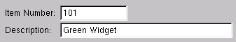
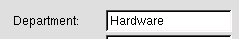
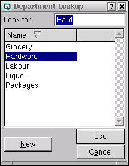
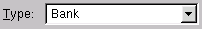
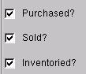
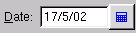

Entry Attributes
When entering data in a data entry window Quasar uses five types
of data entry attributes.
- Text
- Enter text using the alphanumeric keyboard.

- Text or Lookup
- Enter text or select data from a lookup
window. Lookup windows may be involked by pressing "F9". All
attributes subject to lookups display a little blue triangle in the
top right corner of the attribute when the cursor is in the
attribute.


- Select
- Select data from a drop down combo box.

- On/Off Toggle
- Toggle a function on or off. A function is turned
on when a check mark is displayed.

- Date Entry or Calander Search
- Enter a date manually or select a date using the Quasar Accounting Calander. The calander may be involked by clicking on the calander icon
